The entry is the one room every guest sees, and the one room that has to keep working while they see it. Coats, boots, bags and a dog all come through the same three feet of floor.
So the question for every piece of Christmas decor here is not only whether it looks good. It is whether it survives wind, wet and a stroller, and whether anyone can still get past it.
These 30 ideas run from the street to the stairs. The rules first, because the measurements are what separate a welcoming entry from a blocked one.

Five Rules for an Entry That Still Works
- Keep 36 inches of clear floor. That is the width two people need to pass with bags. Anything on the floor goes against a wall, never in the path.
- Size the wreath to two-thirds of the door. A standard 36-inch door takes a 24-inch wreath. Smaller looks like an afterthought.
- Outdoor-rated lights and cords, on a timer. Indoor strings fail in the first rain. A timer set for dusk to 11 p.m. means nobody has to go out in the cold to switch them on.
- Hooks and wire, never tape. Cold and damp make tape let go overnight. Garland needs a hook every 12 inches and a wire tie at each one.
- No open flame in the entry. Long coats, greenery and a swinging door are a bad mix with a candle. LED pillars in lanterns give the same glow.
Front Doors and Wreaths
1. Let the Bow Be the Wreath
A plain evergreen wreath needs one big thing, not ten small ones. A plaid bow the width of your hand span does the whole job, as it does on this blue door.
Use wired ribbon about four inches wide and cut three yards for a 24-inch wreath. Wire holds the loops open in cold air, where unwired ribbon goes limp by the second day.
Tie the bow to the wire frame of the wreath, not to the greenery. Tied to the branches, it slides down by Christmas.
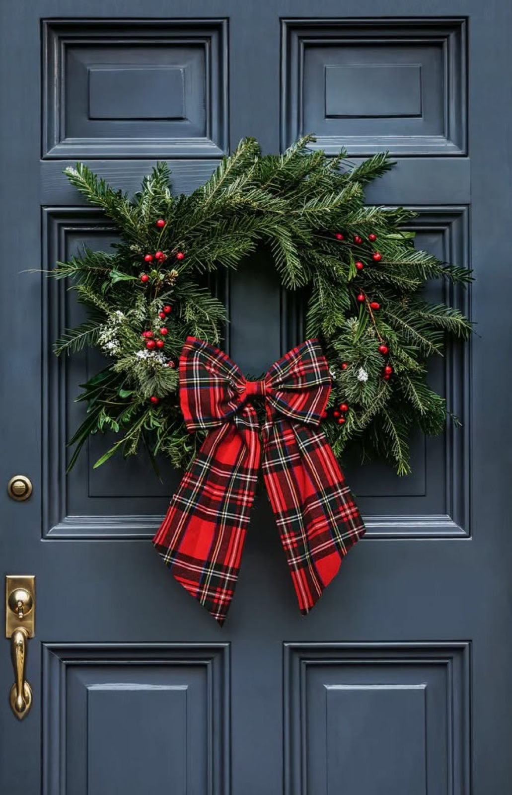
2. Hang the Wreath Over the Top of the Door
Nobody wants a screw hole in a front door. Loop a ribbon over the top edge of the door, fasten it on the inside with a small nail or a command hook, and the wreath hangs with nothing drilled.
The restraint in this photo is the lesson. One plain wreath, one long cream ribbon and two small potted evergreens either side of a wooden door, and nothing else.
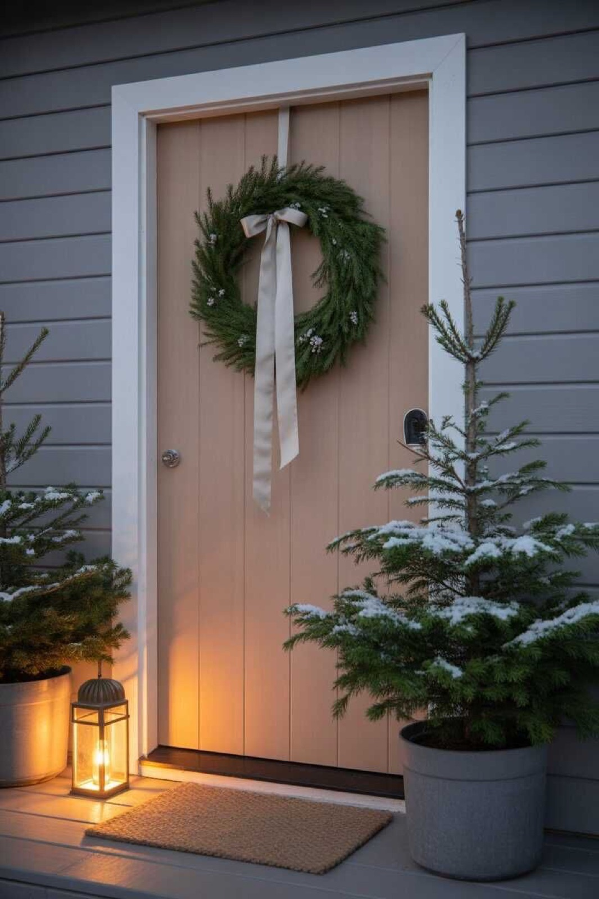
3. Measure the Frame Before You Buy Garland
Most people buy one nine-foot garland for a door frame and it reaches halfway down one side. A standard door takes 18 to 20 feet to go up, across and down.
Buy pre-lit with the plug at one end, and hang the plug end at the bottom nearest the outlet.
Hook every 12 inches with removable outdoor hooks, and wire the garland to each hook. The lit garland with red berries on this door hangs straight because of the wire, not the hooks.
A timer on the outlet finishes it. Dusk to 11 p.m. covers every arriving guest.
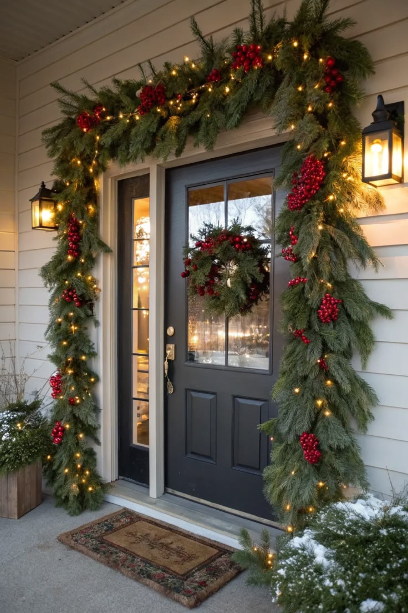
4. Make the Candy Cane From a Wire Frame
A five-foot candy cane on the door costs an afternoon, not money. Bend a length of heavy wire or a foam pool noodle into a hook shape and wrap it in red and white ribbon, overlapping each turn by half.
Hang it beside the wreath with a bow at the top, as on this white door with a lit garland frame.
Use warm white bulbs on the garland. Cool white against stone, as in this entry, turns the whole porch blue.
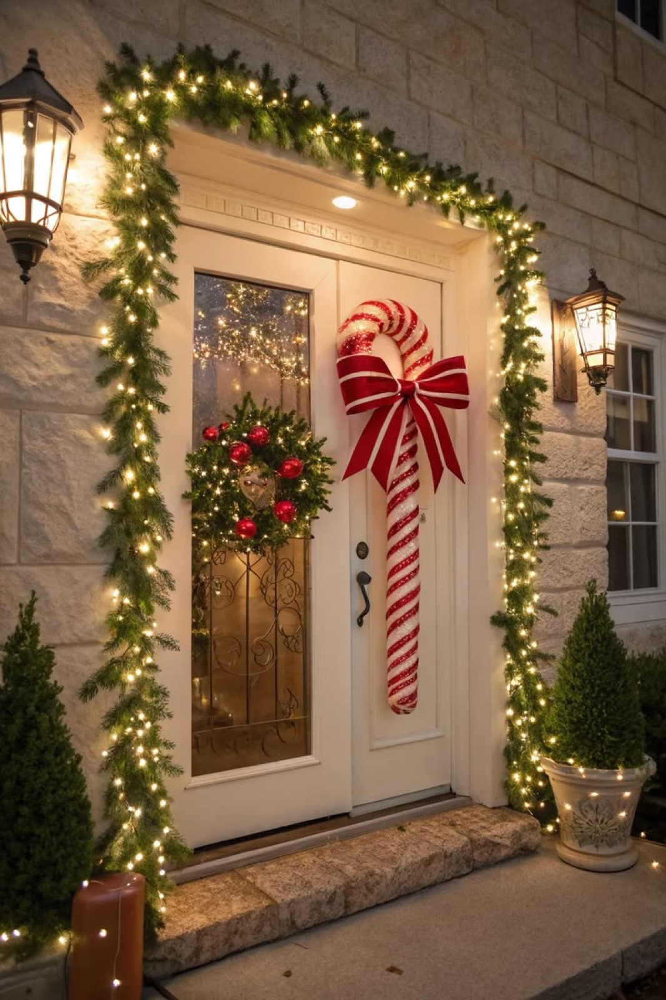
5. Anchor Anything Taller Than Three Feet
A pair of nutcrackers gives a door symmetry, and a gust of wind gives them a fall. Set each on a wooden base and add a sandbag or a stake behind it.
Match their height to the door's side panels, as these two do beside a green door, and four to six feet reads well from the street.
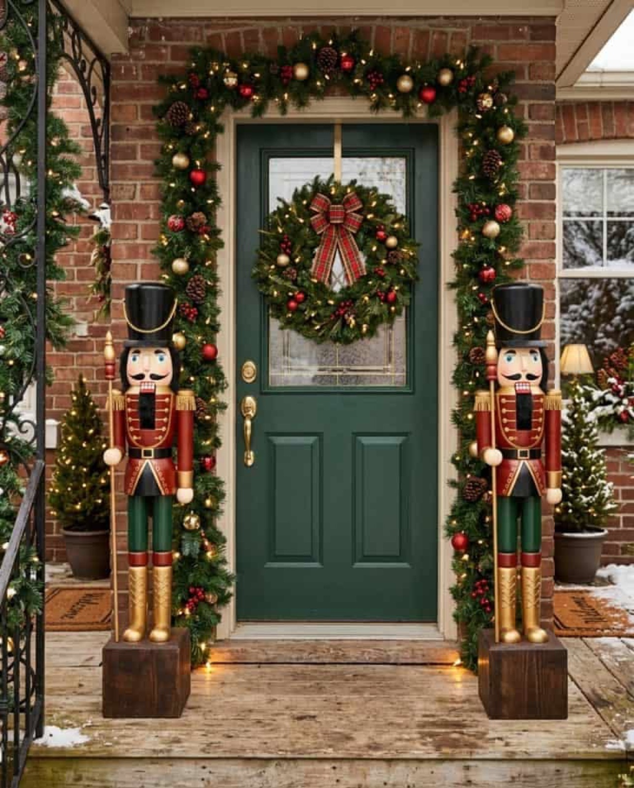
6. Wrap the Columns, Not Just the Door
Porch columns are free vertical space. Spiral a berry garland up each one and tie a velvet bow near the top, as this porch does in burgundy.
Velvet survives damp better than satin, but no ribbon survives a storm. If heavy rain is forecast, bring the bows in for the night.
Wire the garland at the top, middle and bottom of each column so the spiral does not slip.
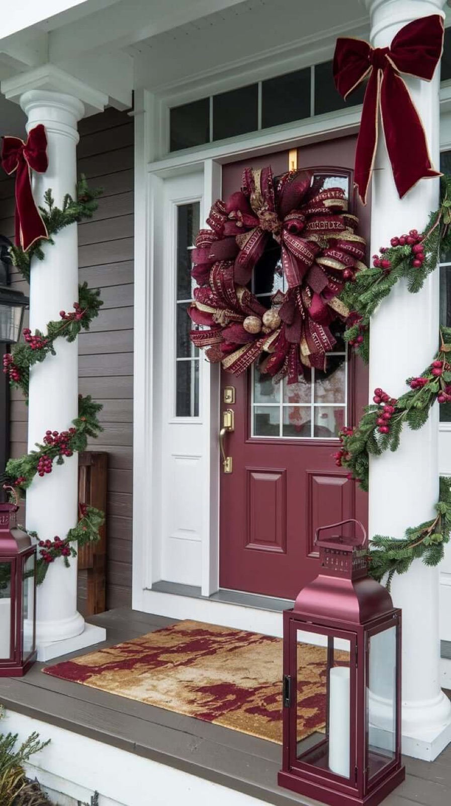
7. Build a Gingerbread Frame From Foam Board
A gingerbread door is a sheet of foam board, a craft knife and two cans of paint. Cut the roofline and the icing scallops from white foam, paint the base pieces tan, and glue the white trim on top.
Hang it with removable hooks and run one short string of lights along the icing, as this door does.
Foam board is light, so it needs no anchors, but it is not waterproof. A covered porch, as here, is the right place for it.
It comes down in ten minutes in January and stores flat behind a wardrobe.
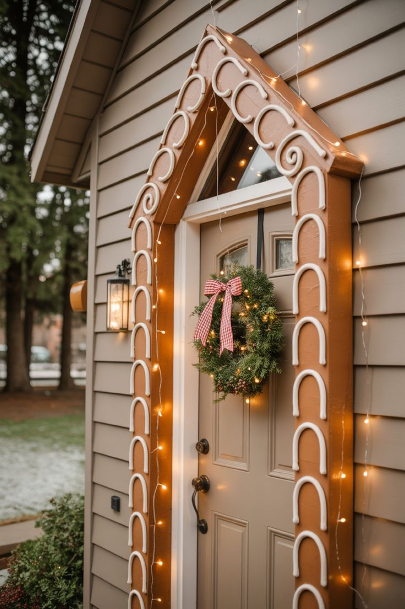
8. Let a Dark Door Carry the Red
Red reads richer on black than on white. If the door is dark, lean into plaid and let the paint do half the work, as this black door does with a plaid-bow wreath.
Stack three boxes in matching paper on the bench beside the door, largest at the bottom. Use empty boxes outdoors and tape the lids shut, or the first wind opens them.
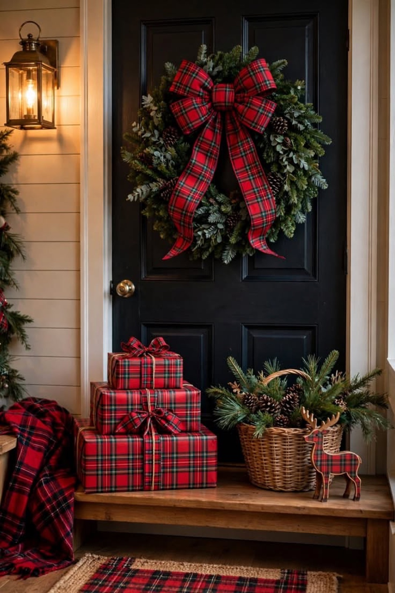
9. Change the Mat, Change the Porch
A seasonal doormat is the cheapest decoration on this list and the first thing every guest touches. A scalloped coir mat with Merry Christmas on it, as here, does more than a second wreath.
Buy coir with a rubber non-slip back. Wet coir on a smooth step is a fall waiting to happen.
Shake it out weekly. Coir holds grit, and a dirty mat undoes the welcome.
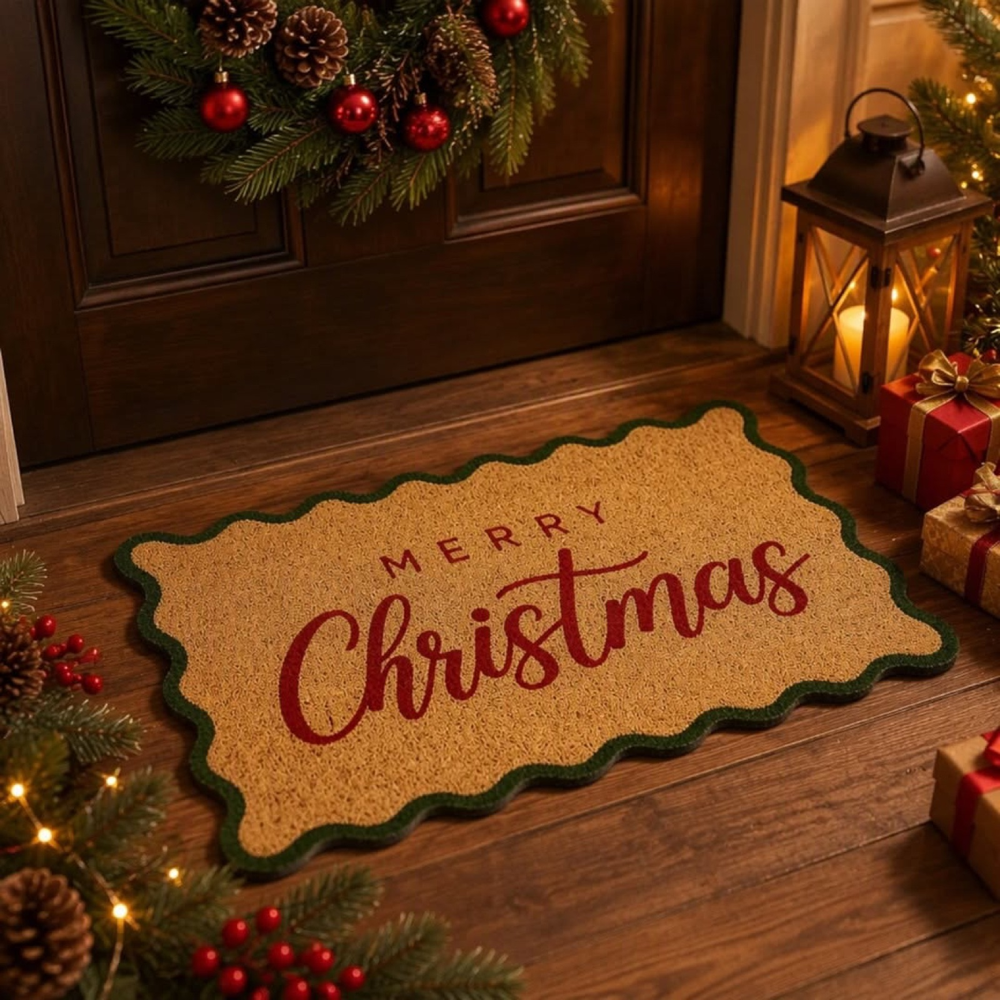
Porches and Stoops
10. Flank the Door With Trees, Not a Second Wreath
Two potted trees either side of the door do more for the street view than any wreath. Four feet tall, in baskets, with a lantern at the base, as these are beside a white door.
Real trees on a cold porch stay fresh for weeks if you water them every few days. Faux trees need lights rated for outdoors and nothing else.
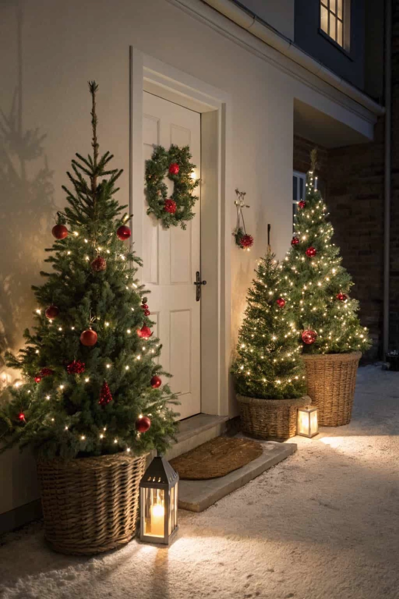
11. Weight the Pot Before the Wind Does
A flocked tree gives you snow where it never snows. It also gives you a sail, and a three-foot tree in a light pot goes over in the first gust.
Use a heavy pot, as this white planter is, or drop a brick in the base before the tree goes in.
On an open porch, wire the trunk to the railing with a loop of green floral wire.
Flocking sheds outdoors. Set the tree on a mat, as here beside a lantern and a crate of pinecones, so the porch floor stays clean.
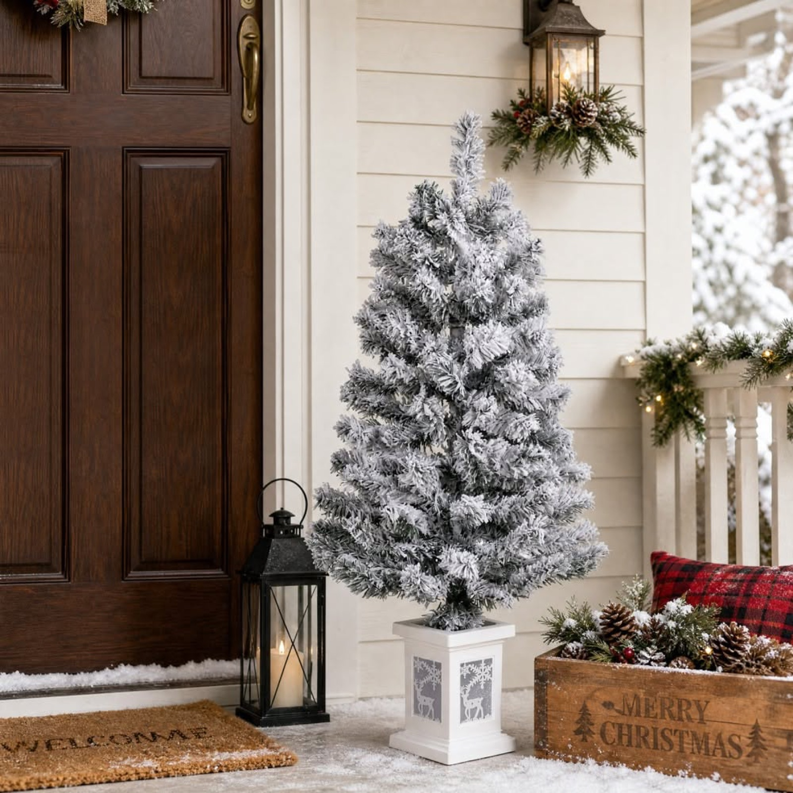
12. Buy Scale, Not Quantity
Three giant bells on a step do more than thirty small ornaments. Group them in three sizes with the largest at the back, as these gold ones are beside two lanterns.
Choose metal or weatherproof plastic, and wedge greenery around the base so the bottom edge disappears.
Bells this size walk off. Run a thin cable through the loops and around a railing post.
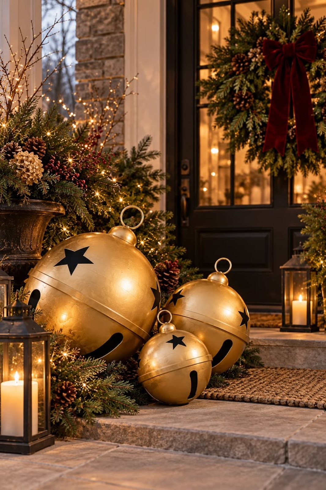
13. One Swag Per Window
A window needs one piece, hung from the top. A pine swag with a burlap bow and three brass bells, as here, is enough, and the tree lights behind it do the rest after dark.
Hang it from a suction hook on the glass or a ribbon looped over the top of the sash. Swags are light, so no drilling.
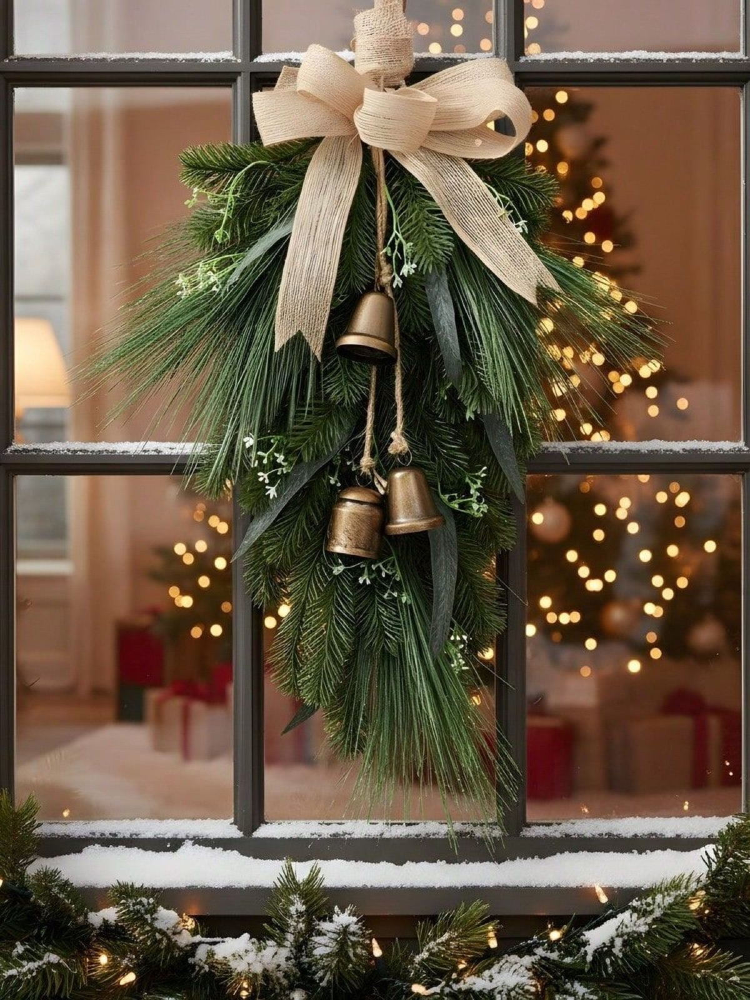
Console Tables and Mirrors
14. Put the Lights in Front of the Mirror
A mirror doubles every light placed in front of it. Candles and a string of fairy lights on the console, with a round mirror behind, light the whole hall, as this wooden console does.
Arrange in a triangle: a tall vase of berries at one end, low gold trees at the other, a candle between.
Slide a basket of throws and a wrapped box onto the shelf below. It fills the dead space and hides the winter gear.
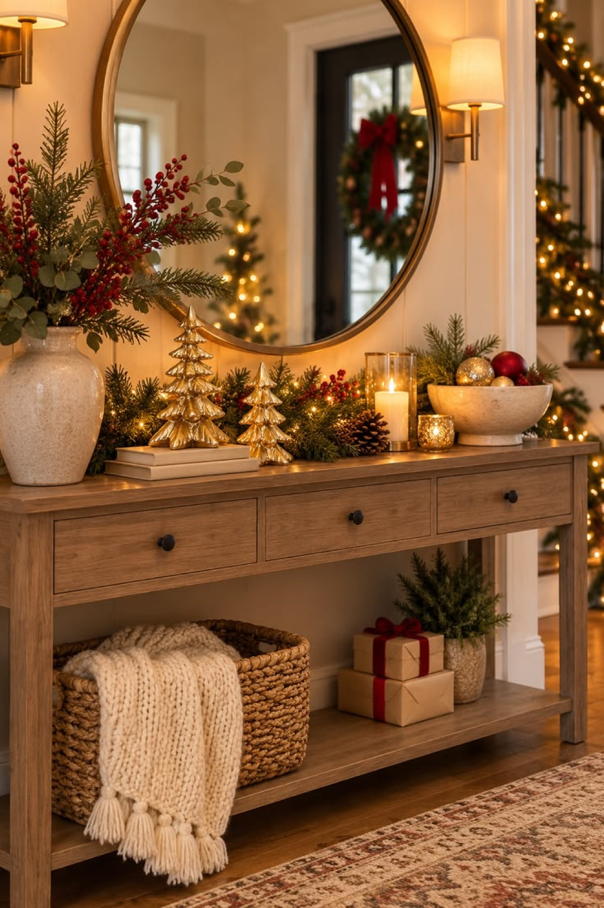
15. One Big Vase Beats Five Small Ones
A narrow console gets cluttered fast. One large cream vase of berry stems and pine, as on this table, reads as a decision. Five small things read as leftovers.
Cut the stems to one and a half times the height of the vase so the arrangement has reach.
Keep the rest of the surface to one candle and a bowl of ornaments.
The empty space is for keys and mail. An entry console that cannot take the post is not doing its job.

16. Frame the Mirror, Then Stop
A mirror wrapped in lit garland with silver balls hanging from ribbon, as here, is a complete entry. The tapers on the console below are the only addition.
Hang the balls at three different lengths so they do not line up. Use removable hooks rated for the mirror's weight plus the garland, and make the tapers LED.
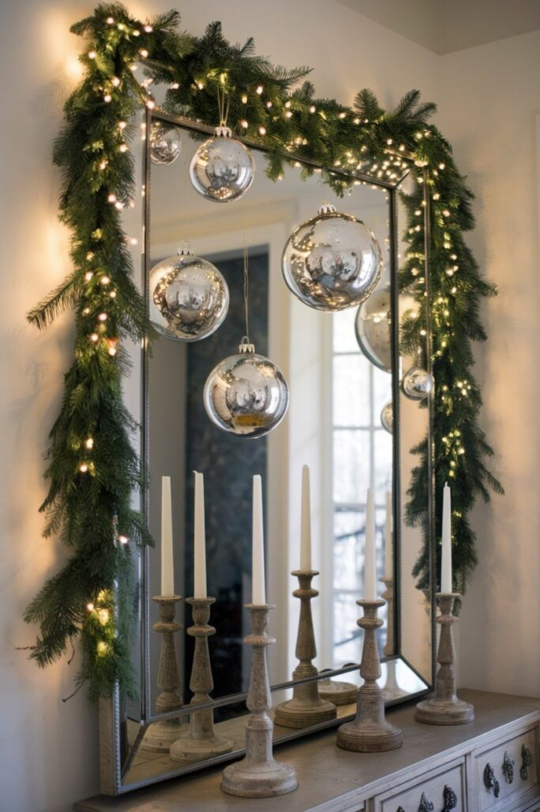
17. Hang a Curtain of Lights Behind the Mirror
A string-light curtain hung behind a mirror turns the glass into a lit panel after dark, which is what gives this ornate mirror its glow.
Fix the curtain to the wall with small hooks above the frame, and let the mirror hide the top.
On the console, group the deer and the bottle brush trees in odd numbers, and run a short garland of pinecones and ornaments along the front to hide the bases.
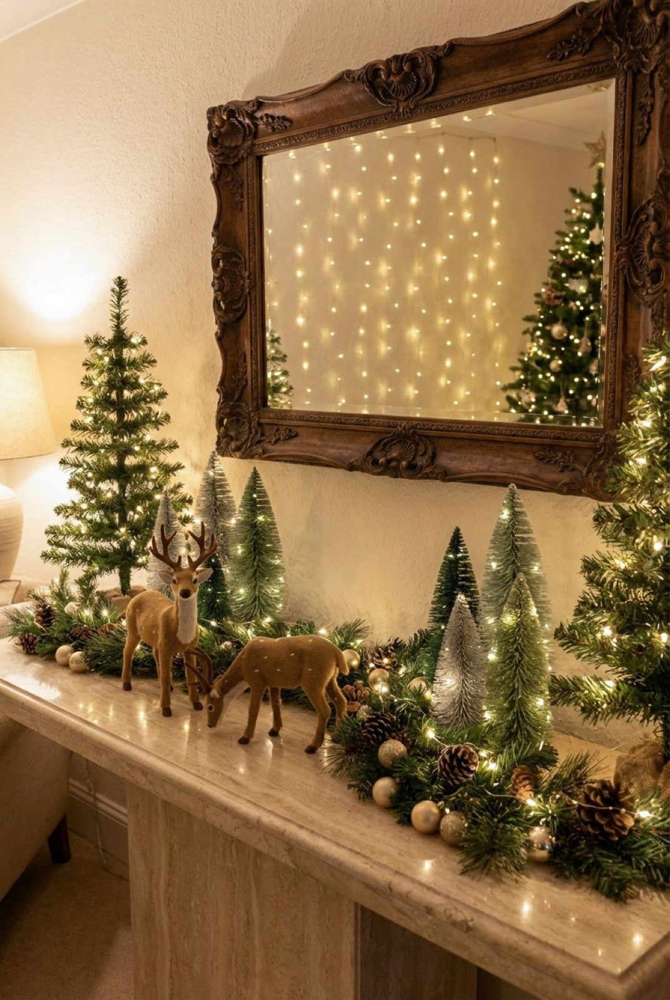
18. Build a Forest in Three Heights
Bottle brush trees in one height look like a row of pencils. Three or five in different heights, tallest at the back, look like a forest, as on this white console.
Fill the gaps with gold and silver balls, and slide wrapped boxes onto the shelf below so it does not read as empty.
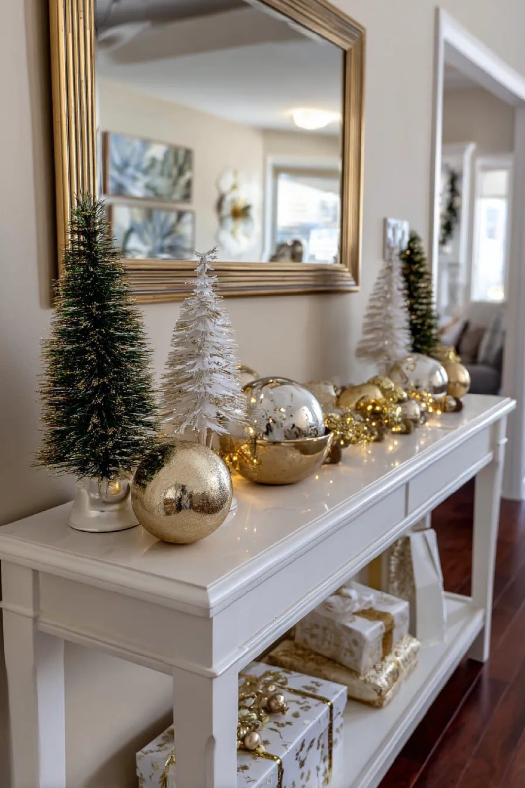
19. Give the Winter Gear the Bottom Shelf
The shelf under a console is the most useful space in the entry. Two baskets for scarves and shoes, as here, keep the table on top free for a two-foot tree in a white pot.
Hang a small wreath on the mirror with ribbon over the frame. Nothing is drilled, and the mirror comes back clean in January.
A tray of pinecones and one ornament on the table is enough. A tree, a tray and a wreath, and the console is done.
Keep the baskets open-topped. A lid gets left off anyway.
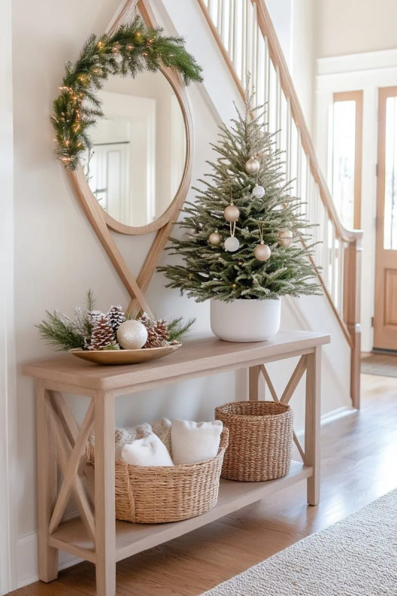
20. Repeat Every Color at Least Three Times
Burgundy, forest green and gold feel rich in a hall with warm wood, but only if each color appears more than once. In this entry the burgundy is on the tree ribbon, the taper and the throw, and the green is on the stool, the garland and the small trees.
A stool under the console is the smartest piece here. It is where bags land, and it tucks away when the hall is busy.
A knit throw in the basket is for the look. A throw on the stool is for the guest who needs to sit to get a boot off.
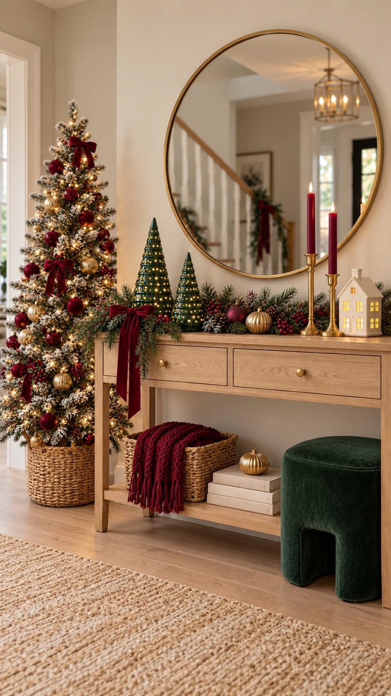
21. Give a Slim Console a Vertical Line
A narrow table disappears under a bare wall. A large wreath above it, as here, gives the eye a line from the floor to the ceiling, and a lantern and a slim vase on the table balance the garland.
Lay a jute runner on the floor in front. It takes boots better than wood, and it marks the path.
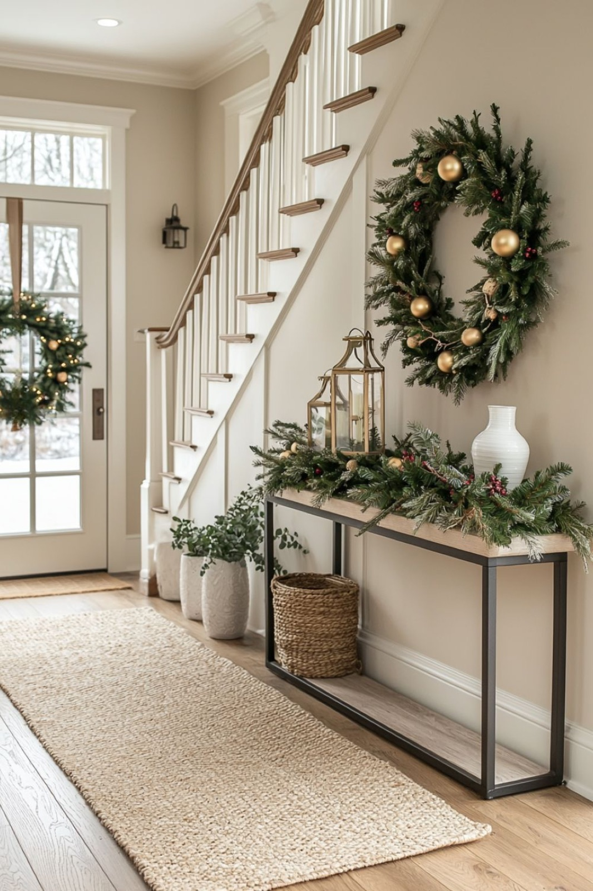
22. Give the Village a Base
Village houses set straight on a sideboard look like a shop display. A garland laid along the surface first, with the houses and bottle brush trees pushed into it, as here, looks like a snowy street.
Choose houses lit by battery tealights and put them on a six-hour timer.
Run the garland right to the ends of the sideboard. A village that stops short looks unfinished.
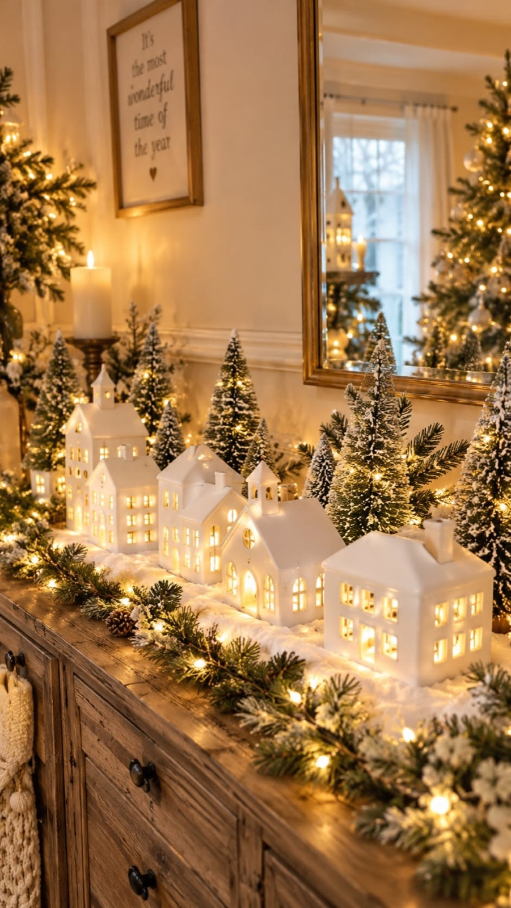
23. Strip the Stems Below the Waterline
A glass cylinder shows everything, including rotting leaves. Strip every leaf and needle below the water, as these berry and cedar stems have been, and the water stays clear for a week.
Cut the stems to one and a half times the vase height and change the water every three days.
Faux stems need none of that. In a glass vase, though, faux shows at the stem ends, so use real ones here and faux on the console.
This takes two minutes and works on a kitchen island, as in this photo, just as well as in the hall.
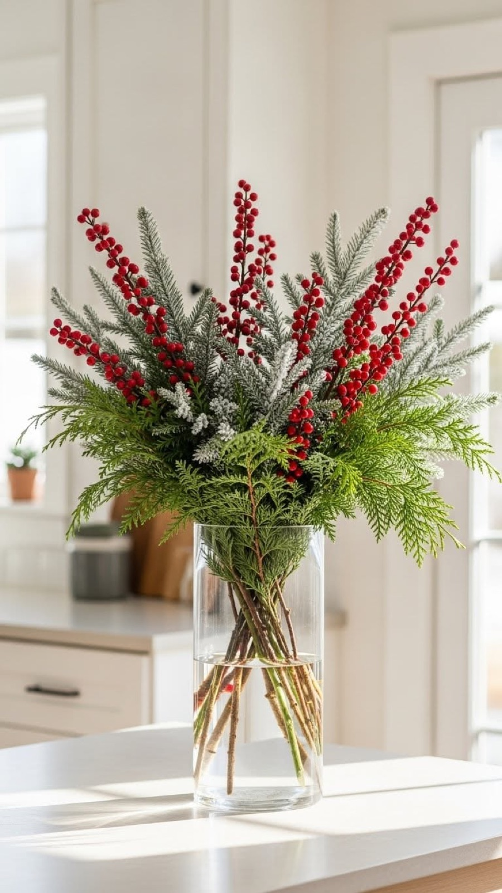
Benches and Stocking Rails
24. Hang the Sign on a Wall Anchor
A framed Merry Christmas sign above a bench, as here, weighs more than its sawtooth hook can hold. Put a proper wall anchor in and hang the sign from that.
Two pillows, one throw and a basket of greens on the floor. That leaves room on the bench for a person taking off their boots, which is the point of a bench.
25. Collect the Gifts in One Basket
Gifts that arrive early end up on every surface in the house. A big basket by the bench, as here, is where they go until Christmas Eve, and it looks like decoration in the meantime.
Choose a basket wide enough that nothing spills when a box is added on top.
Keep the pillows to three. A bench buried in cushions cannot seat anyone.
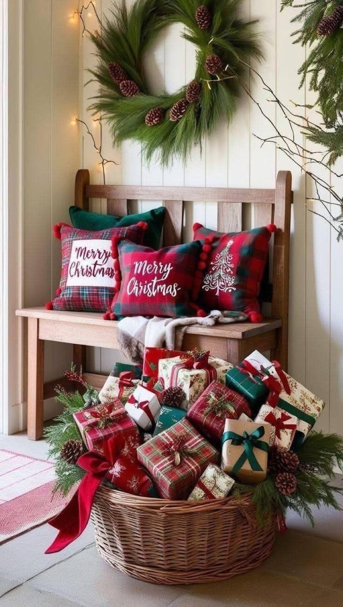
26. Screw the Rail Into Studs
A hook rail holds a whole family's stockings without a mantel. Full stockings weigh several pounds each, and four of them on drywall anchors come down on Christmas morning.
Find the studs, screw the rail into at least two of them, and then hang four personalized stockings as this rail does, with a garland along the top.
A bell tied to each hook rings when a stocking is lifted, which is a nice alarm on the 25th.
Names on the cuffs mean no arguments about which stocking is whose.
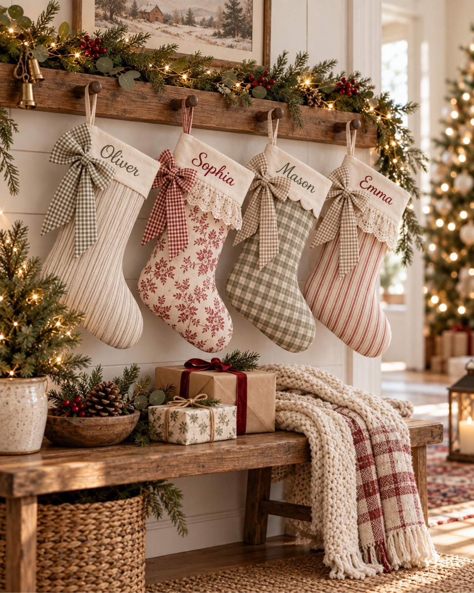
Stairs and Hallways
27. Wire the Garland at Every Spindle
A stair garland fastened at the top and bottom only sags in the middle by the second week. Wire it every 12 inches, and put a bow at the newel post and another halfway up, as this curved staircase does.
A plaid runner inside the door catches snow and grit before it reaches the wood floor.
A lantern on the side table with an LED pillar inside keeps the corner lit without a flame near all that greenery.
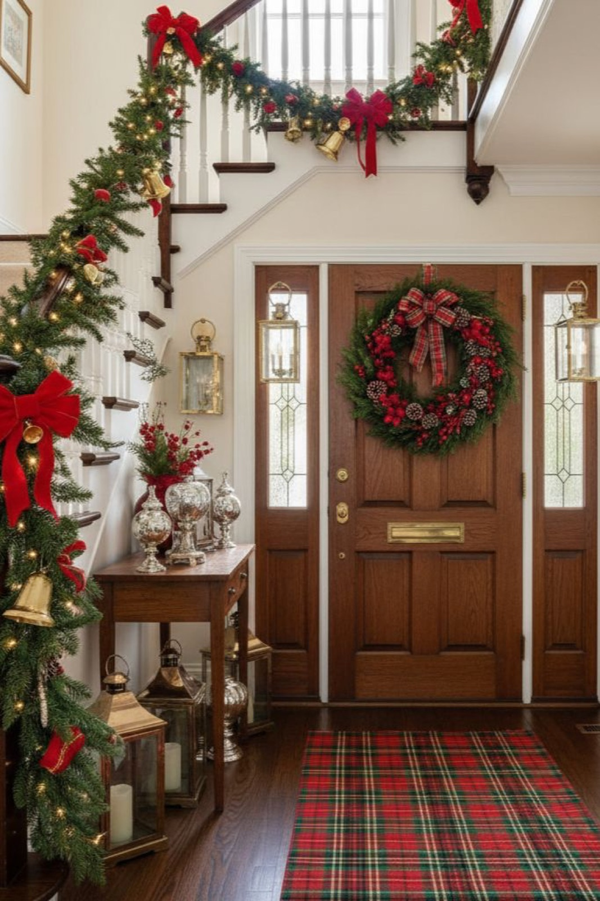
28. Spiral Loosely, Then Light It
A garland wrapped tight around a banister looks like a bandage. Spiral it loosely around the spindles so it hangs in soft curves, as this pinecone and berry garland does on dark wood.
Weave one strand of warm white lights through it after it is hung, keep the plug near an outlet, and tape the cord flat along the baseboard so nobody catches a foot.
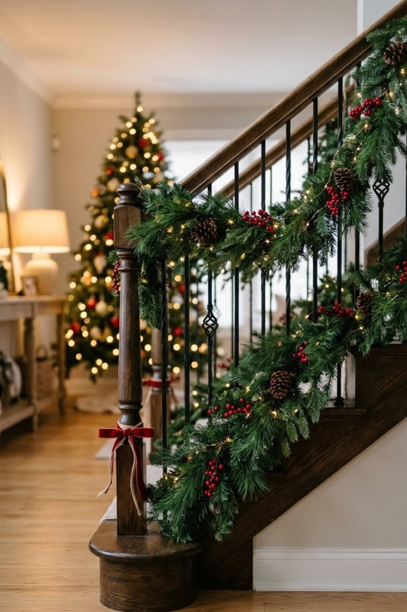
29. Make a Small Hall Bigger With White
A white palette opens up a tight foyer. White birch branches in a tall vase, a white console and a white fur rug, as in this entry, make the space read larger than it is.
A hanging snowflake pendant gives the ceiling something to do.
Fur on hardwood slides. Put a non-slip pad under the rug before anyone in socks comes through.
Keep the white to a few textures: bark, fur, ceramic. All-smooth white looks like a clinic.
30. Light the Floor With LEDs Only
A cluster of candles at floor level, as along this dark hallway, makes the whole corridor glow. It also puts flame at the height of a coat hem and a dog's tail.
Use flameless pillars in glass hurricanes, group them against a wall, and keep them out of the 36-inch path.
Set them on a timer and they greet whoever comes home last.
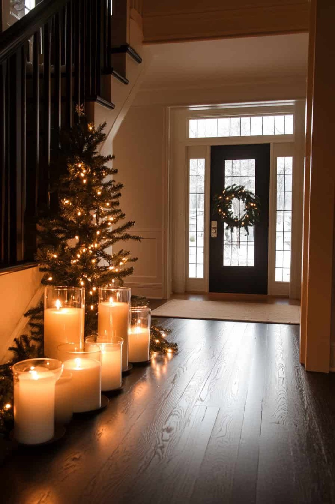
Common Mistakes (and Fixes)
- Mistake: a wreath that looks lost on the door. Fix: choose one about two-thirds of the door width. A 36-inch door takes a 24-inch wreath.
- Mistake: tape holding the garland and the sign. Fix: outdoor hooks every 12 inches with wire ties, and a wall anchor for anything framed.
- Mistake: indoor light strings on the porch. Fix: buy lights and extension cords rated for outdoor use, and plug them into a timer.
- Mistake: decor in the walkway. Fix: keep a 36-inch clear path and push large pieces against a wall or railing.
- Mistake: a real candle on the console or the floor. Fix: LED pillars in lanterns and hurricanes. The glow is the same and the coats stay safe.
Where to Start
Start at the door, because that is what guests see first, and add one piece inside, a console or a bench. That is a finished entry.
The test is simple. If two people can walk in with their arms full and nothing falls over, it works.